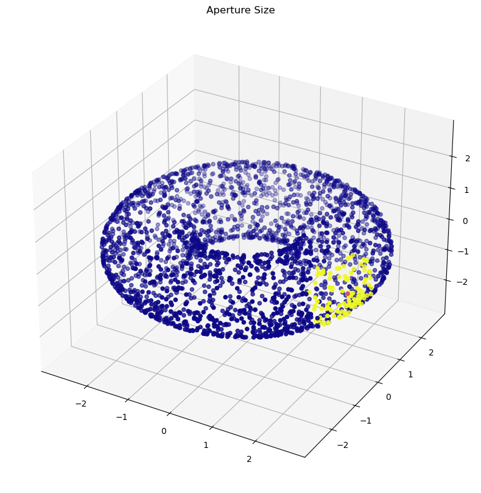

# from nbdev.showdoc import *
import numpy as npThe autoreload extension is already loaded. To reload it, use:
%reload_ext autoreloadThe autoreload extension is already loaded. To reload it, use:
%reload_ext autoreloadlocal_laziness (A, diffusion_powers=8, aperture=80, neighborhood=1, dynamically_adjusting_neighborhood=False, smoothing=1, verbose=False)
Take a localized measure of diffusion laziness, with diffusion restricted to with the given aperture. Estimates curvature.
| Type | Default | Details | |
|---|---|---|---|
| A | ndarray | Affinity matrix of data (non-row normalized) | |
| diffusion_powers | int | 8 | The number of matrix powers to raise the diffusion operature, by default 8 |
| aperture | int | 80 | The number of nearest neighbors to which to limit the diffusion operator, by default 80 |
| neighborhood | int | 1 | The number of nearest neighbors of a point to use calculating laziness, by default 1 |
| dynamically_adjusting_neighborhood | bool | False | Whether the aperture and neighborhood should be based on thresholds derived over the dataset (False) or should expand to create the designated number of neighbors everywhere in the dataset (if True), by default False |
| smoothing | int | 1 | Number of iterations of diffusion averaging to apply to the laziness values before returning, by default 1 |
| verbose | bool | False | Whether to print debugging statements and return extra debugging information, by default True |
| Returns | list | Laziness value at each point |
With the code written, let’s test it on our old friend, the torus
array([[1.02905510e-04, 9.59025050e-09, 1.11411829e-05, ...,
9.60411836e-29, 1.51498661e-08, 5.84429425e-37],
[9.59025050e-09, 8.92910800e-05, 4.36453173e-07, ...,
1.37293943e-29, 1.27608437e-09, 3.78254688e-34],
[1.11411829e-05, 4.36453173e-07, 9.52505739e-05, ...,
3.92482681e-25, 7.00693037e-09, 2.63894273e-34],
...,
[9.60411836e-29, 1.37293943e-29, 3.92482681e-25, ...,
1.01443258e-04, 6.94848776e-19, 5.67994428e-12],
[1.51498661e-08, 1.27608437e-09, 7.00693037e-09, ...,
6.94848776e-19, 1.17267004e-04, 5.00075287e-20],
[5.84429425e-37, 3.78254688e-34, 2.63894273e-34, ...,
5.67994428e-12, 5.00075287e-20, 1.15277718e-04]])aperture = 100
diffusion_powers = 16
neighborhood=20
smoothed = 2
ks, apertures, Ps, Ws = local_laziness(A, diffusion_powers=diffusion_powers, aperture=aperture, neighborhood=neighborhood,smoothing=smoothed, verbose=True)Let’s see what the aperture looked like
dist = np.zeros(len(X))
dist[apertures[0]] = 2
dist[0] = 1
plot_3d(X,distribution=dist,title="Aperture Size")
What are the distributions of laziness values in three parts of the torus?
For a positively curved region, we expect the mass to remain clumped in the middle, hence there should be a smaller number of larger points.
For a region of little curvature, we expect a more even spread.
For a region of negative curvature, we expect the mass to be pushed to the sides, creating a greater number of not-quite-as-large points.
# This currently takes unreasonably long to run.
# decaying_lazy = laziness_decay(A, max_steps=40,aperture=100,adaptive_neighborhood=False,use_local_laziness=True, neighborhood=10)KeyboardInterrupt: # fig, ax = plt.subplots(1,figsize=(10,10))
# ax.plot(decaying_lazy[0],color='green',label='Positive')
# ax.plot(decaying_lazy[2],color='blue',label='Zero')
# ax.plot(decaying_lazy[1],color='red',label='Negative')
# ax.legend()
# ax.set_xlabel("Diffusion Time Steps")
# ax.set_ylabel("Laziness")Text(0, 0.5, 'Laziness')Beautiful! The region-limited laziness value differentiates between negative, positive, and low positive curvature regions after only five iterations of diffusion, after which it stabilizes very quickly. Compare this to the laziness decay graphs of the traditional laziness measurement, which take upwards of 60 diffusion powers to differentiate the regions.
But note: even on the very first diffusion iteration, the negative and positive regions have been distinguished. Hence, this effect may be due to the same neighborhood-size interference we noted earlier.